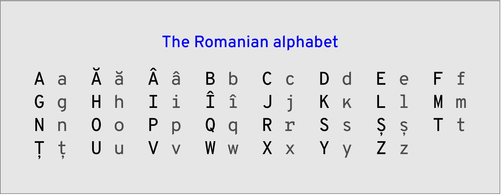
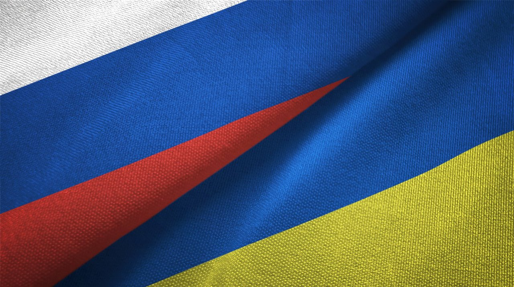

El sistema sanitario actual de Rumanía es comparable al español. Ambos países cuentan con un "Sistema Nacional de Seguros de Salud", aunque en Rumanía está menos desarrollado y peor financiado.
Dicho sistema se implementó en 1999, trece años después que el español (1986).
Antes del sistema actual, Ceaușescu había instaurado un sistema de salud centralizado y estatal, siguiendo el modelo soviético (1960–1980). La atención era gratuita y universal, aunque la calidad disminuyó por falta de recursos.
Desafíos actuales: importante emigración de profesionales sanitarios hacia otros países de la UE, lo que genera escasez en zonas rurales. El gasto en sanidad es del 5,2% del PIB, por debajo de la media europea (~9,9%).
Antes de la Segunda Guerra Mundial existían hospitales públicos (atención gratuita o a bajo costo) y privados (pago directo), con los costes corriendo a cargo del paciente.
Moneda oficial: Leu rumano (RON)
- Ban/bani (100 bani = 1 leu): monedas de 1, 5, 10, 50 bani
- Leu/lei (RON): billetes de 1, 5, 10, 20, 50, 100, 200, 500
El RON se utiliza desde el
2005. Antes se usaba el ROL:
A julio de 2023:
1€ ≈ 4,94 RON.
Salario Mínimo (SMIC): 606,10€ a julio de 2023 (solo 12 pagas anuales). En 2021 era de 467,50€.
Un
sueldo promedio ronda los 3.000–5.000 RON (607–1.012€), aunque en el sector TI puede triplicar esa cifra.
El
PIB de Rumanía es de aproximadamente 300.000 millones de euros (2023).
Rumanía
produce casi de todo, tanto para uso propio como para exportación.
Históricamente ha destacado en agricultura, ganadería, industria petrolera, petroquímica, textil, siderúrgica y energía hidroeléctrica.
Principales productos exportados:
- Calzado → Alemania, Italia, Francia, España
- Maquinaria y equipos → Alemania, Italia, Francia, UK
- Vehículos y componentes (Dacia/Renault) → toda Europa
- Productos textiles → Italia, Alemania, Francia, España
- Cereales y granos → Egipto, Italia, Irak, Irán, Turquía
- Productos químicos y petroquímicos → Turquía, Italia, Alemania
- TIC → UK, Alemania, Francia, Países Bajos
Importante productor de
energía renovable: hidroeléctrica, eólica y solar, con objetivo del 30,5% para 2030.
El Idioma Rumano
El único idioma oficial es el rumano, proveniente del latín vulgar. Con influencias eslavas, turcas y húngaras, se estableció como idioma oficial en 1863.
Es el único idioma romance del este de Europa, hablado por unos 24 millones de personas en el mundo. El alfabeto rumano usa el latino con letras adicionales: ă, â, î, ș, ț.

Otros Idiomas Hablados en Rumanía

Ruso y ucraniano
Haz clic sobre las banderas para saber más sobre cada idioma.
Húngaro: Hablado principalmente en Transilvania. Se estima que el 6–7% de la población de Rumanía lo habla (≈ 1,2–1,4 millones). Tiene reconocimiento oficial en municipios donde supera el 20% de la población.
Alemán: Comunidades alemanas en Transilvania y Banat. Aunque ha disminuido por emigración, unas 50.000 personas aún lo hablan.
Turco: Hablado en la región de Dobruja. La comunidad turca y tártara es histórica en esa zona. Entre 25.000 y 30.000 hablantes.
Ruso y ucraniano: Norte de Moldavia y sur de Bucovina. Unos 70.000 hablantes de ruso y 25.000 de ucraniano. Los "Lipovanos" del Delta del Danubio son descendientes de rusos ortodoxos.
Búlgaro: Presente en Dobruja, cerca de la frontera con Bulgaria. Se estima que unas 10.000 personas lo hablan.
Romaní: El idioma de la comunidad gitana. Rumanía tiene la mayor población gitana de Europa: entre el 10–15% de la población (2–3 millones de personas).
Frases útiles: Español ↔ Rumano
- "¡Hola!" → Salut!
- "Gracias." → Mulțumesc!
- "¿Cómo estás?" → Ce faci?
- "Te quiero." → Te iubesc!
- "¿Dónde está el baño?" → Unde este baia?
- "Buenos días." → Bună dimineața!
- "Adiós." → La revedere!
- "Disculpe." → Mă scuzați.
- "¿Cuánto cuesta?" → Cât costă?
- "Con gusto." → Cu plăcere!
- "Lo siento." → Îmi pare rău.
- "Ven conmigo." → Vino cu mine!
- "¿Qué tan lejos está?" → Cât de departe este?
- "¡Salud!" → Noroc!
- "Tienes razón." → Ai dreptate.
- "Me gusta eso." → Îmi place asta.
- "¿Dónde está el restaurante?" → Unde este restaurantul?
- "Necesito ayuda." → Am nevoie de ajutor.
- "No entiendo." → Nu înțeleg.
- "¿Qué haces mañana?" → Ce faci mâine?
Influencia Popular
Drácula:
Drácula es un personaje literario creado por el irlandés Bram Stoker en su novela "Drácula" (1897). La historia sigue a Jonathan Harker, que viaja a Transilvania para cerrar un trato con el Conde Drácula, descubriendo que es un vampiro.
El nombre proviene de Vlad III (1431–1476), "Vlad el Empalador", conocido por su crueldad contra los otomanos. La conexión con Rumanía ha convertido a Transilvania en un destino turístico único.
Transilvania:
Región histórica en el centro de Rumanía, famosa por sus paisajes montañosos, castillos medievales (Bran, Peles, Corvin) y la mezcla de culturas rumana, húngara y sajona. Un patrimonio cultural extraordinario.
Vampiros:
La figura del vampiro popularizada por Stoker ha sido reinventada en incontables obras: desde el Drácula de Stoker hasta la saga Crepúsculo o "What We Do in the Shadows". Un mito con raíces en el folclore rumano y eslavo.
Deportistas Famosos
Gimnasia Artística:
Nadia Comăneci
Primera gimnasta en obtener una puntuación perfecta de 10 en los Juegos Olímpicos de Montreal 1976. 5 medallas olímpicas de oro en total.
Tenis:
Simona Halep
Ganó Roland Garros (2018) y Wimbledon (2019). Alcanzó el nº 1 del mundo en el ranking WTA.
Atletismo:
Gabriela Szabo
Medallista de oro olímpica en Sídney 2000 (5.000 metros) y múltiple campeona del mundo.
Fútbol:
Gheorghe Hagi
"El Maradona de los Cárpatos". Brilló en el Real Madrid, Barcelona y Galatasaray. Lideró a Rumanía al cuarto de final del Mundial de 1994.
Halterofilia:
Nicu Vlad
Múltiples medallas olímpicas y mundiales, uno de los atletas más exitosos en halterofilia de Rumanía.
Remo:
Elisabeta Lipă
5 medallas de oro olímpicas en cinco Juegos Olímpicos (1984–2004). Una de las mejores remeras de todos los tiempos.
Boxeo:
Leonard Doroftei
Excampeón mundial de peso ligero, reconocido por su técnica y logros internacionales.
Esgrima:
Ana Maria Brânză
Medallas en los Juegos Olímpicos y múltiples campeonatos mundiales en espada femenino.
Influencia Audiovisual
Resident Evil Village (2021):
El juego se desarrolla en un entorno ficticio inspirado en Rumanía, incorporando arquitectura y folclore de Transilvania para dar autenticidad a la experiencia.
The Nun (Película, 2018):
Rodada parcialmente en Rumanía, usando el monasterio de Cârța y el paisaje rural como telón de fondo. Parte del universo de "El Conjuro".
Cristian Mungiu (Director):
Palma de Oro en Cannes por "4 Months, 3 Weeks and 2 Days" (2007). Ha colocado al cine rumano en el mapa internacional.
Alexander Nanau (Director):
Documental "Collective" (2019), nominado al Oscar y al BAFTA. Referente del cine documental mundial.
Edward Maya (Músico):
Famoso mundialmente por "Stereo Love" (2009), uno de los mayores éxitos internacionales de la música rumana.
Inna (Cantante):
Cantante de dance y pop con éxitos como "Hot" y "Sun is Up". Reconocida en más de 50 países.
O-Zone — "Dragostea Din Tei" (2004):
La icónica "Numa Numa", uno de los primeros grandes virales de internet. Un fenómeno cultural global.
Vladimir Cosma (Compositor):
Compositor de emotivas bandas sonoras para el cine francés (La Chèvre, Le Grand Blond...). Contribución clave a la atmósfera cinematográfica europea.